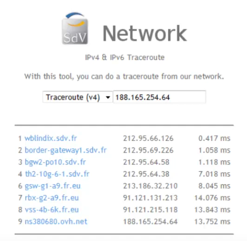

Routage IP : Méthodes et protocoles de routage
Plan
• Qu'est ce que le routage ?
• Tables de routage
• Protocoles de routage
• Systèmes Autonomes
Qu'est ce que le routage ?
• Permet d'interconnecter plusieurs réseaux
◇ via des routeurs
▪ composants de couche réseau (3)
▪ toute machine compatible IP peu agir en tant que routeur, grâce à un logiciel de routage
- en relayant les paquets qui ne sont “pas pour lui”
- en dés-encapsulant le paquet IP de la trame Ethernet
- et en le ré-encapsulant avec une nouvelle adresse MAC de destination
• grâce à un ensemble de règles
◇ déterminant qui peu communiquer avec qui et comment
▪ c'est à dire “en empruntant quel chemin” / “en passant par qui”
◇ enregistrées dans des “tables de routage”
• Remarque : un routeur permet également de connecter des VLANs
◇ par exemple pour communiquer avec des ressources partagées (comme le DHCP)
◇ le subnetting se fera entre des réseaux physique différents (séparés par des routeurs) alors que les VLANs seront sur un même réseau physique (via de switchs)
▪ en pratique, on cumulera souvent les deux
Exemle avec traceroute

• ici un traceroute en ligne
• affiche la route empruntée
◇ entre le serveur de sdv.fr
◇ et celui de alphorm.com
• on voit ici qu'il a été nécessaire de passer par 6 routeurs différents
Tables de routage
• Le routage est un processus décentralisé
◇ chaque routeur possède les informations sur son voisinage
◇ détermine à qui doivent être envoyés les paquets destinés à un réseau particulier
▪ routeur voisin ou réseau directement connecté
• associe une adresse réseau à une passerelle (un routeur)
• Trois types de routes
◇ statique : configuration manuelle par l'administrateur
▪ chaque entrée est donnée explictement
◇ dynamique : apprentissage par le routeur lui même
▪ grâce à des protocoles de routage spécifique
◇ connectée : réseaux directement connectés au routeur
▪ appel à un protocole de niveau 2 (Ethernet)
• A cela s'ajoute une route par défaut, qui peut-être statique ou dynamique
Systèmes Autonomes
• AS pour Autonomous System
• zone particulière (sous ensemble) d'un très grand réseau
◇ composé de nombrex réseaux IP, LAN, WAN, etc ...
◇ administrés par une même entité
◇ ex : réseau “grand compte” d'envergure mondiale, backbones internet (réseau d'opérateur de large envergure)
• deux type de routeurs en son sain
◇ de bordure : permettnt d'entrer et sortir de l'AS
▪ par exemple, pour rejoindre Internet (d'un réseau d'opérateur vers les autres)
◇ internes : assurent la communication entre réseaux de l'AS
• chaque AS est identifiés par un numéro (ASN) unique au sain d'un même réseau
◇ sur Internet, ceux-ci sont délivrés par les registrs internet régionaux
◇ ex : 16276 pour OVH via RIPE-NCC
◇ plus de 45000 AS coposet internet en 2013
Protocoles de routage
• Pour employer des lagorithmes de routage efficaces, un routeur à besoin de connaître au moins une partie de la typologie du réseau
◇ il est donc nécessaire de diffuser la tables de routage
▪ ie. échanger les informations entre routeurs
• On utilise pour cela un protocole de routage
◇ de deux types :
▪ internes : Interior Gateway Protocols (IGP)
- entre routeurs interne d'un même AS
- ex : RIP ou OSPF
- les seuls concernés par le CCENT
▪ ou externes : Exteror Gateway Protocols (EGP)
▪ entre routeurs de bordure d'AS différents
▪ ex : BGP
Exemples de protocoles de routage interne
• RIP et RIP-2 : Routing Information Protocol
◇ le plus ancine et le plus simple
◇ très limité
• OSPF : Open Shortest Past First
◇ écrit pour remplacer RIP en palliant à ses limites
◇ complet et performant
◇ habituellement réservé aux grand réseaux
◇ recommandé comme IGP pour Internet (RFC 1371)
• IGRP : Interior Gateway Routing Protocol
◇ proprétaire Cisco
• IS-IS : Interior System to Interior Sysstem
◇ norme ISO/IEC 10589:2002 de l'OSI
◇ extrêment stable
Exemples de protocoles de routage externe
• EGP : Exterior Gateway Protocol
◇ le premier
◇ très peu performant
◇ quasi abandonné
• BGP : Border Gateway Protocol
◇ le plus efficace et donc le plus utilisé
◇ utilisé pour Internet
• ES-IS : Exterior System to interior System
◇ unique EGP normalisé OSI
◇ très peu utlitisé
Ce qu'on a couvert
• Concepts essentiels du routage réseau
◇ objectifs et fonctionnement
◇ types de routes
▪ statiques
▪ dynamiques
▪ connectées
▪ par défaut
◇ protocoles de routage
◇ IGP
◇ EGP